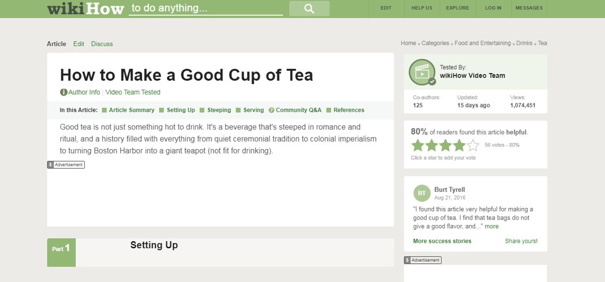
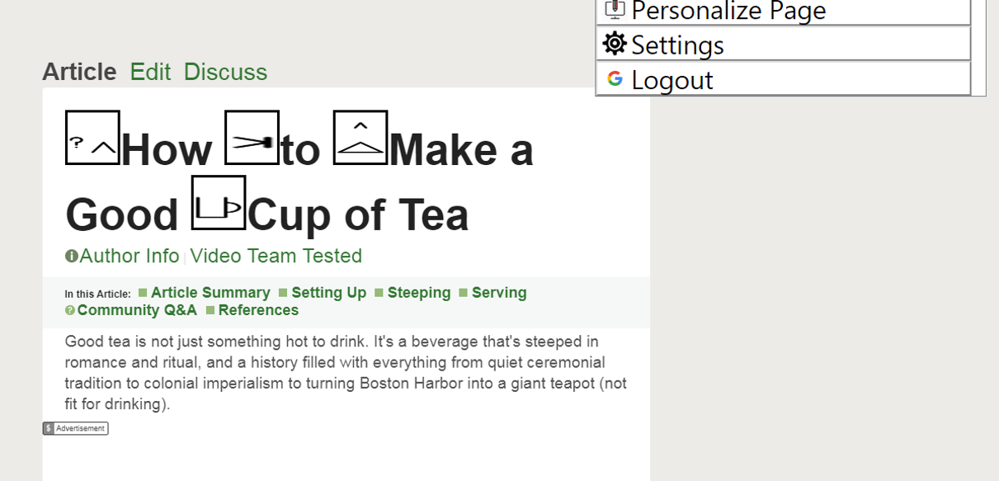
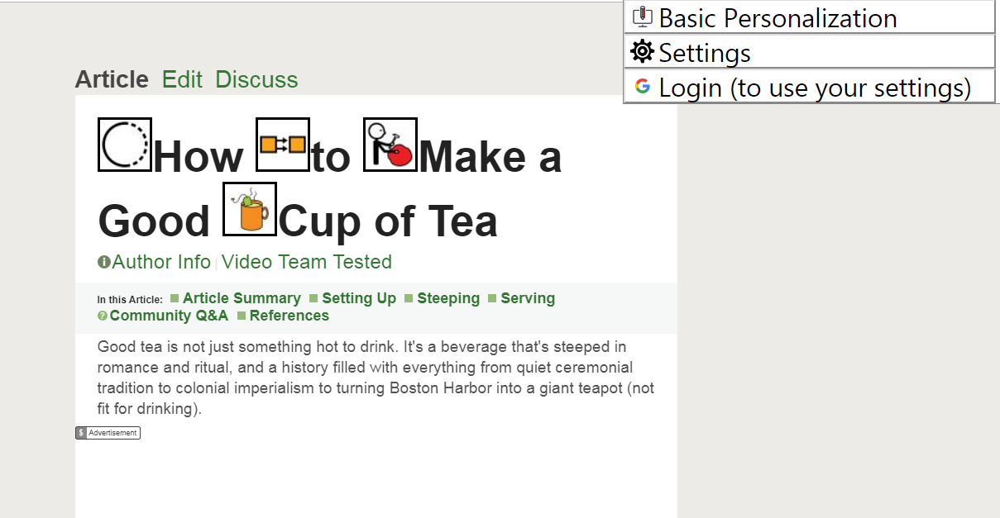

People have very different needs. There are many people with cognitive and learning disabilities that affect their ability to interact with the web. Some people cannot process numeric information (dyscalculia), but others understand numbers better than words. Some people with severe language disabilities use symbols to represent words; some people need (or want) simplified user-interfaces. Different people find different layouts and types of content easier to understand, and what is useable and understandable by one person can be be too complex for another. One of the main challenges is to address these varied and conflicting user needs, so that content can be understandable by the individual users. The specification (and modules) described in this Explainer provide a means for web technologies to address these requirements.
The personalization specification enables authors to add extra semantic information about content to enable personalization for the individual user. This provides extra support and facilitates user-agents for people with learning and cognitive disabilities.
Authors add extra semantic information using a collection of new attribute(s) and values, with (in most cases) a fixed token list (taxonomies). This document is an explanation for understanding how the Personalization attributes are used to personalize an accessible web site.
Status of This Document
This section describes the status of this
document at the time of its publication. Other documents may supersede
this document. A list of current W3C publications and the latest revision
of this technical report can be found in the
W3C technical reports index at
https://www.w3.org/TR/.
Publication as an Editor's Draft does not imply endorsement by the W3C
Membership. This is a draft document and may be updated, replaced or
obsoleted by other documents at any time. It is inappropriate to cite this
document as other than work in progress.
This document was produced by a group
operating under the
W3C Patent Policy.
The group does not expect this document to become a W3C Recommendation.
W3C maintains a
public list of any patent disclosures
made in connection with the deliverables of
the group; that page also includes
instructions for disclosing a patent. An individual who has actual
knowledge of a patent which the individual believes contains
Essential Claim(s)
must disclose the information in accordance with
section 6 of the W3C Patent Policy.
Enables the author to specify key semantics to support users with cognitive impairments;
Defines a syntax for adaptable content such as: links, buttons, symbols, help, and keyboard shortcuts.
Technology holds the promise of being extremely flexible and the design of many systems includes the expectation that users can optimize their interaction experience according to their personal preferences or accessibility needs.
1.1 Why We Need Personalization
Personalization will allow assitive technology to:
adapt to and meet the user's needs. Users who have difficulty with established, mainstream patterns can interact with interfaces modified to their preferences and abilities.
modify levels of complexity as people's skills improve or decline over time. For example, extra support may be critical for some people but distracting for others.
provide extra support to users who require:
familiar and consistent symbols, iconography, and graphics
tooltips or similar on-demand help or clues
language they understand
fewer or more constrained features
distinction between native and third-party content
custom keyboard shortcuts
To achieve this, we need standardized terms and supportive syntax. These can be linked to associated symbols, terms, translations and explanations. This allows modifications based on an individual's personal preferences.
Example of sending an email:
An author programmatically identifies that a button sends an email. Based on user preference settings the interface can be modified to:
render the button with an alternative term, and/or furnish an additional tooltip that is understandable by the individual user;
include F1 help that explains the send function in simple terms;
associate the button with a keyboard shortcut that is always used for send (Submit);
identify the button as important and always rendered in an emphasized form.
1.2 Use Case Examples
Requirements for Personalization Semantics elaborates many use cases that further contextualize the above summary of user needs. These example use cases form the basis of requirements for this technology. Personalization enables developers to create targeted extensions as additional use cases are encountered.
Someone who is either easily distracted or can be easily overwhelmed with too much information on a web page needs the ability to simplify the page. They want just the critical information, and need anything that is not integral to the understanding and use of the page suppressed.
Example: The user wants to get the latest weather report for their city and goes to a weather website.
Finding the actual weather forecast is actually a little challenging even if you have no disabilities due to all the additional content on the screen; along with advertisements, there is also the day's top stories, trending news, and social media to cognitively filter. If you are easily overwhelmed or distracted getting the key information about today's weather is a challenge. Having the ability to personalize and prioritize all but the key information (i.e. just the weather forecast for my city) is critical for this user.
In this example, the author can mark the <section>, <p>, or <div> that contains the actual weather report and any associated tools to manipulate the weather report (i.e. city search, hourly vs. 5 day forecast, etc.) with the data-simplification attribute (with a value of "critical"), and mark the other on-screen content as "medium" (default) or "low". (e.g. <p data-simplification="critical">Today’s forecast is a high of 95° and a low of 40°</p>)
For websites which rely on advertising revenue, it may be undesirable to completely suppress advertisements. We envision that this attribute could also facilitate relocating the most critical sections of a website above anything that is a lower priority. (i.e. Content re-ordering)
1.2.2 Difficulty Understanding Numbers
Someone who has dyscalculia will have difficulty understanding numbers and will have a hard time interacting with websites that use numbers to convey information. Therefore, critical numeric information must be provided in an alternative format that the user can understand.
Example: The user wants to get the latest weather report for their city and goes to a weather website.
For today’s forecast, it shows a high of 95° and a low of 40°. This representation is not understandable for particular user. Presenting this numeric information as a symbol or text would benefit the user. For example, next to the number 95, there could be:
a picture of someone wearing shorts and a tee-shirt with the sun above or
simply a text alternative of “Very warm”.
Next to the number 40, there can be:
a picture of someone wearing a jacket with pants, or
a text alternative of “Very cold”.
Next to the humidity index of 90%, there could be a text alternative of “muggy”.
In this example, the author would mark up the numbers using the data-numberfree attribute. The default would show the numeric value. Those needing an alternative representation for numbers, would get an associated image or description/values as simplified text instead.
It is important to note that people with dyscalculia are often very good with words, so long text can be better than short numbers.
1.2.3 Mild-Moderate Language Impairment / Learning Disability
Those who have a moderate Language Impairment / Learning Disability may have a limited vocabulary. They will only know terms that are in the core vocabulary they have learned. They may also use symbols to represent words and concepts.
Example: The user may know the word "name" or "last name" but have not learned the term "family name".
For some users, learning new terms is very slow, requiring hours of work. For these users, reading may also be very slow, so finding the right information can be a barrier. The ability to personalize a web page and present symbols instead helps users to easily understand the content being provided
Note that some people with language disabilities are good at numbers. They will want a long string of text replaced with a short number: <span data-easylang="90% of the time this happens"> normally this is the expected outcome</span>. This is the opposite of the numberfree example.
Additionally, because reading content for some users is extremely time-consuming, they may also want less content and features on the web page.
1.2.4 Severe Language Impairment
Some users with a severe speech and/or physical impairment may communicate using symbols, rather than written text, as part of an Augmentative and Alternative Communication (AAC) system. The use of symbols to represent words is their primary means of communication when both consuming and producing information. Symbol users face a wide variety of barriers to accessing web content, but one of the main challenges is a lack of standard inter-operability between different proprietary symbol sets, or a mechanism for translating the same concept from one symbol set to another.
User Stories include:
An assisted living home authors adult education courses and life-skills content, for example, how to make dinner using a microwave. Within their core user-base, users are accustomed to different symbol sets. The authors want to create content for all users across various symbol sets.
A large banking site wants people to be as autonomous as possible while using their services. They provide augmented symbol references onto their core services. They need a mechanism to programmatically support multiple symbol sets witin the code.
People who know different symbol sets wish to talk to each other.
A government agency creating information sheets about human rights and patient rights are seeking feedback from impacted users. They add symbols from a common symbol set to support a majority of different users. The agency would prefer to use a common symbol reference to support people who use or require different symbols. This allows all symbol set users to both read and edit the content.
Example: Using the data-symbol attribute, an author programmatically tags the label for a form input with the appropriate symbol value. Based on user preference settings, a browser helper application or stand-alone tool could then render that label using an appropriate symbol, alternative term, and/or furnishes an additional tool-tip that is understandable by the individual user. Using the Bliss Symbolics set's unique reference numbers as our 'taxonomy', other symbol sets can map their equivalent symbols against the Bliss set.
In the screen shots below, a browser extension uses the data-symbol attribute to load symbols that are familiar to the user.
Note that users learn a specific symbol vocabulary. However, the various symbol vocabularies are mutually unintelligible: users familiar with one set of symbols may not be familiar with or understand an alternative set. Personalization Semantics' data-symbol attribute offers a mechanism to translate between symbol sets, to allow people to communicate with one another where it was previously not possible.

Figure 1 The original page

Figure 2 The same page loaded, but the user-agent has removed content and added symbols

Figure 3 The same page loaded, but the user-agent has removed content and added different symbols that this user is more familiar with
1.2.5 Working Memory and Short-term Memory Impairment
Users may have differences in both working and short-term memory. For some users, the number of items or data that can be stored in working memory is a fraction of the general population's average. Whereas most adults can repeat about seven digits in correct order, a specific user may only manage two or three numbers. When they become distracted, they are also likely to forget any information in their working memory.
Example: Many processes consist of a sequence of separate steps or actions which must be performed by a user to complete a process or workflow.
Users need to remember completed tasks in order to identify their location in a process. In addition, a user must be able to navigate to completed tasks to make modifications or corrections.
A step indicator allows an author to define steps within a process or represent an entire user path outside of the context of a defined process. This includes turning steps between defined processes into breadcrumbs or linked steps that identify completed tasks. This allows the user to navigate back to completed steps and identify a user's current location in a path.
This module provides vocabularies that enable user-agents to augment or adapt content to the user scenario which helps the user use and understand the content.
It includes use-cases and vocabularies for identifying the purpose of controls, symbols and user interface elements, and supports simplification and avoiding distractions.
The first working draft of this module is now available.
This module addresses adding information about the content to enable user-agents and extensions to provide additional support to the user. One example is adaptable breadcrumbs.
3. Vocabulary Structure
This section is non-normative.
Personalization Semantics is made of a vocabulary of properties and their values. This generic structure makes it possible to apply Personalization Semantics in a variety of contexts by adapting how the vocabulary is instantiated. The Vocabulary Implementations section below describes current ways to use the vocabulary.
3.1 Properties
Properties are the main units of personalization types supported by the vocabulary. A given property supports a specific type of personalization. That property would only be used once on a given piece of content, but multiple different properties could be used on the same piece of content to address different needs.
3.2 Values
Values provide the specific personalization information for the property. The possible values for each property are elaborated in the definition of the property in the modules. Some properties require the value to come from a predefined list of possible values, others can accept arbitrary strings, and some may accept multiple values. The attribute value may be one of the following types:
ID reference
Reference to the ID of another element in the same document
ID reference list
A list of one or more ID references.
integer
A numerical value without a fractional component.
number
Any real numerical value.
string
Unconstrained value type.
token
One of a limited set of allowed values.
token list
A list of one or more tokens.
URI
A Uniform Resource Identifier as defined by RFC 3986 [RFC3986]. It may reference a separate document, or a content fragment identifier in a separate document, or a content fragment identifier within the same document.
Note
The attributes and values in this specification are not intended to overide the semantics exposed in the Accessibility Tree, but rather augment them. In the case of conflict between an element's semantics and the attribute values, validation algorithms should issue a warning but not an error.
4. Vocabulary Implementations
This section is non-normative.
4.1 Current Usage
At the present stage of development, the Personalization Semantics vocabulary can be used in HTML content using data-* attributes [html5]. Attributes in this form can be used in valid HTML to implement features recognized by browser extensions or other special processors. Personalization Semantics is using this approach to gain early implementation experience of the features in a way that is simple and likely to be accepted within the web ecosystem as an interim approach.
This publication of the personalization semantics provides several key-value pairs (attribute = value). These attributes include but are not limted to:
Other properties exist or will be developed as the modules mature. See the discussion Prototypes with data dash.
Note
The personalization specification currently defines and relies on multiple entity attributes
constructed according to the requirements of Sec. 3.2.6.6 of the HTML Specification, Embedding custom non visible data with the data-* attributes and by express request of W3C's Technical Advisory Group (TAG). The HTML data- attribute syntax is not intended to be used for long-term wide-scale features. The task force is using this approach at the moment to gain implementation experience and demonstrate the usefulness of Personalization Semantics in practice.
Implementers are cautioned that the "data-" prefix will be removed or replaced for some or all attribute values in succeeding iterations of this specification following additional consideration in W3C and the WHATWG.
4.2 Technology Comparison Summary
The task force reviewed various vocabulary options before deciding upon the use of the data- HTML attribute syntax. The list of technologies included:
AUI-prefixed attributes: a new, personalization specific set of attributes (e.g. aui-action)
A new single attribute, purpose, to encode both properties and values
A new single attribute with properties and values encoded using inline css syntax of key/value pairs
An extension of the above single attribute using CSS key/value pairs and simple text content
Three new attributes for token, value, and URI, respectively
Value pairs - a personalization type attribute and an associated value attribute.
Negotiate new personalization attributes into native host languages
Embed personalization data via JavaScript Object Notation (JSON)
Use of the existing data- attribute mechanism of HTML
Considerations in the decision process:
Authoring
ease of authoring and potential ambiguity between personalization and existing features;
User-Agents
ease of determining and parsing the properties & values and the ability to implement as an extension;
Host Languages
requirement for special host language support, works in multiple languages, integrates with ARIA and HTML, easy extension of the vocabulary, and needed number of new features;
Functionality
necessity of multiple properties and interaction between properties, integration with other vocabularies, likely search engine support for content alternatives, and typed value support;
Strategy
avoid segregation of accessibility from other features, provide a clear path to join with other W3C personalization efforts, and stable enough to avoid modification of authored content over time;
We presented some of these options at the TPAC 2018 Personalization Plenary Day presentation and provided a working example using the data- attribute to add personalization features. The data- solution was recommended by representatives of several working groups attending our presentation and discussions. See the Vocabulary Implementations section in this Explainer document for further details on the use of data- attributes.
5. Stakeholders
This section is non-normative.
This document is useful for:
Content creators who want to accommodate as many users as possible, including AAC users, and people with learning & cognitive disabilities.
Content creators who want to create adaptable content that meets the users' preferred experience
Technology developers and providers who want to build technologies that enable more people to use the web effectively
Developers of symbol languages and related technologies
Students who wish to develop a new software project that meets a real need
Policy makers who want to understand what is possible for inclusion
For early implementations of content we suggest including a link to an extension implementation that can maximize the benefit for users.
A. Acknowledgments
This section is non-normative.
The following people contributed to the development of this document.
A.1 Participants active in the Personalization TF at the time of publication
Matthew Atkinson (TPG Interactive)
Mike Beganyi (TPG Interactive)
Thaddeus Cambron (Invited Expert)
Michael Cooper (W3C/MIT)
John Foliot (Invited Expert)
Becky Gibson (Knowbility, Inc.)
Charles LaPierre (Benetech)
Roy Ran (W3C/Beihang)
Janina Sajka (Invited Expert)
Lisa Seeman (Invited Expert)
Sharon Snider (IBM Corporation)
Lionel Wolberger (Invited Expert)
A.2 Other Personalization TF contributors, commenters, and previously active participants
Joanmarie Diggs (Igalia)
Richard Schwerdtfeger (Knowbility, Inc.)
Jason White (Educational Testing Service)
A.3 Enabling funders
This publication has been funded in part with U.S. Federal funds from the Health and Human Services, National Institute on Disability, Independent Living, and Rehabilitation Research (NIDILRR) under contract number HHSP23301500054C. The content of this publication does not necessarily reflect the views or policies of the U.S. Department of Health and Human Services, nor does mention of trade names, commercial products, or organizations imply endorsement by the U.S. Government. Some of the work on this project has also received funding from the European Union’s Horizon 2020 research and innovation programme under grant agreement No.780529 and 643399.
B. References
B.1
Informative references
[html5]
HTML5. Ian Hickson; Robin Berjon; Steve Faulkner; Travis Leithead; Erika Doyle Navara; Theresa O'Connor; Silvia Pfeiffer. W3C. 27 March 2018. W3C Recommendation. URL: https://www.w3.org/TR/html5/